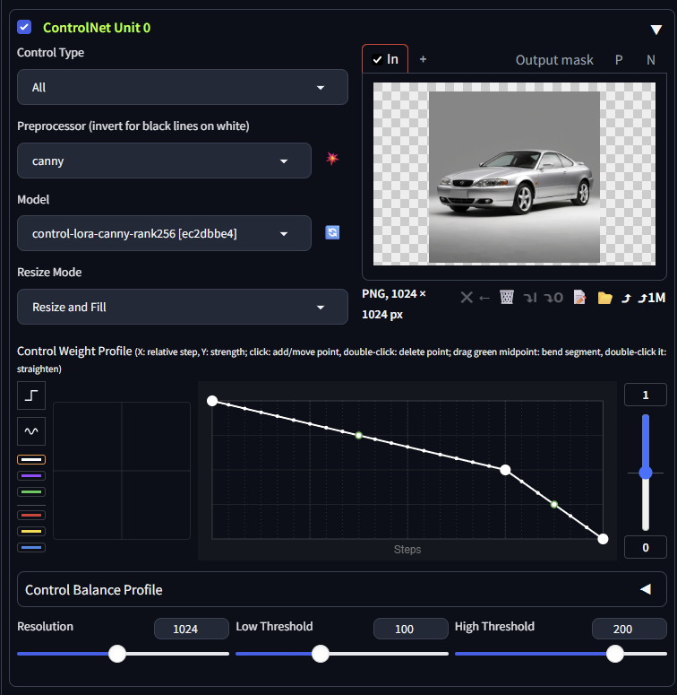
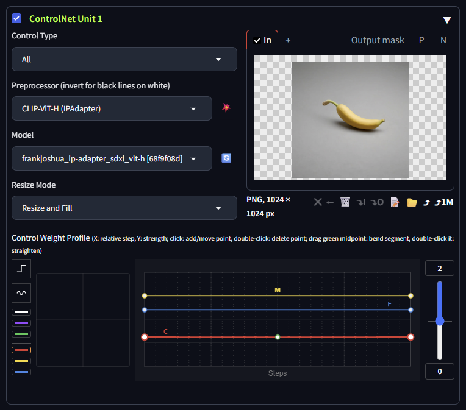
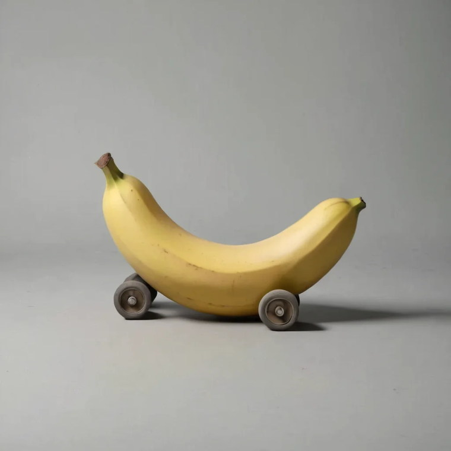
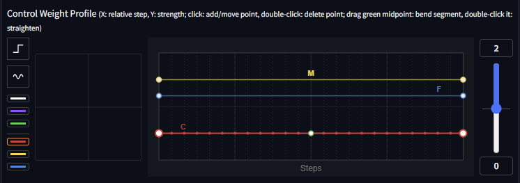
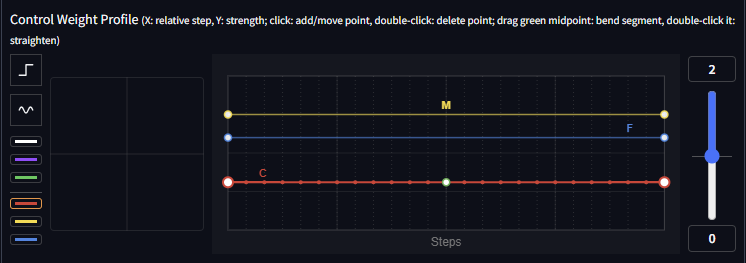
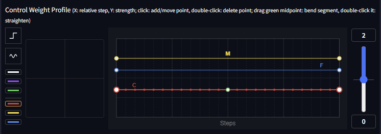
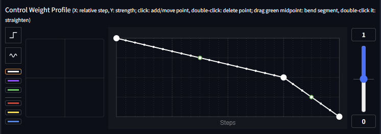
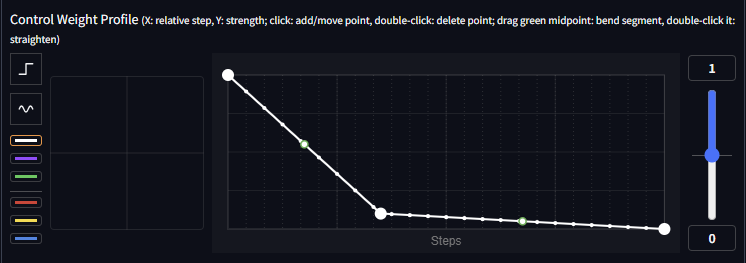

Why one weight slider cannot do this
A ControlNet does not hand the model a single nudge. It injects a residual at every layer it is wired into, at every sampling step — and those injection sites are ordered by depth. CNPro cuts that depth axis into three bands and gives each its own control:
| Band | Injection sites | Decides |
|---|---|---|
| C — coarse | the deepest | composition: silhouette, stance, where the mass sits |
| M — mid | the middle | form: how panels swell, meet and taper |
| F — fine | the shallowest | surface: material, texture, colour |
A weight slider collapses all three into one number, and this picture needs them to disagree: keep the car's layout, bend the body toward a banana, restyle every surface. Turn a single weight up and the banana gets louder at every depth at once — it takes the composition long before it finishes shaping the body. Give each band its own value and the contradiction dissolves, because the two halves are no longer addressed to the same layers.
Canny holds the composition

canny at 100/200, and
a weight profile that starts at full strength and is bent down to nothing by the end.
The green dot is the segment midpoint — dragging it is what curves a straight run.Why the curve descends. Composition is settled in the first handful of steps; after that the model is resolving surfaces. A hint held at full strength to the end keeps enforcing its edges through all of it, and nothing can deform. Letting go by the end locks the layout while it matters and then leaves room — that released tail is where the banana will go.
Notice also what the prompt managed on its own here: the paint went yellow and the shape did not move at all. Text names colours and parts; it does not argue with a geometry hint about silhouette.
The donor, addressed by depth

CLIP-ViT-H (IPAdapter),
and — the part that matters — a band selector pressed, so the plot now shows three
curves instead of one. C sits low, M
highest, F between them, on a range that reaches 2.
The coarse band is the dial
Both units together now. M and F stay where they are; only the coarse line moves. Watch the red line in the editor and the silhouette in the picture:



Why the transition is so sharp. At the deep sites two controls are pulling on the same layers: the canny residual saying car outline, the coarse band saying banana. Below ~0.55 canny is simply the larger of the two and the silhouette stays a car. Above ~0.65 the balance flips and wheels become decorations the prompt is begging for rather than structure the hint is holding. In between — a window about 0.06 wide — neither wins, and the silhouette is negotiated.
Raising M instead will not substitute: the mid layers can restyle a body, but by the time they act the silhouette is already committed by the layers below them. That is the depth axis behaving exactly as advertised, and the reason the fix for "not banana enough" is never "turn everything up".

What the canny curve is buying
Same bands as the finished picture. Only unit 0's profile changes — released early instead of held to three-quarters:


So the two units are not independent knobs — they are two sides of one negotiation. The canny step profile decides how long the layout is defended; the banana's coarse band decides how hard it is attacked. Move either and the window moves.
The prompt has a job too. Neither reference contains a windscreen or
a door line — the banana has no such parts and canny has thrown away everything but
edges. Naming them (banana-shaped car with wheels, doors and windshield) is
what supplies the parts the two controls then arrange. The negatives block the easy way
out (banana lying next to the car, two objects) and counter the scale cues a
macro studio reference drags in with it (toy, miniature, model car, macro).
Adapting it
- Not enough donor? Raise C in steps of 0.05 before touching anything else. If the composition breaks before the shape arrives, hold the canny curve longer — the two trade against each other.
- Right shape, wrong material? That is F, and it is nearly free: it cannot damage the layout, so it is the band you can push hard.
- Body too smooth, or too literal? M, either way.
- A donor with a pose of its own — an animal rather than a fruit — wants the composition much harder, and the usable window is both lower and narrower. That is example 2.
One caveat. The window quoted here — coarse between roughly 0.55 and 0.65 — belongs to this pair of references, this checkpoint and this canny model. What transfers is the procedure, not the number: lock the geometry, find the coarse threshold by bisection, then style with mid and fine, which cannot hurt you.